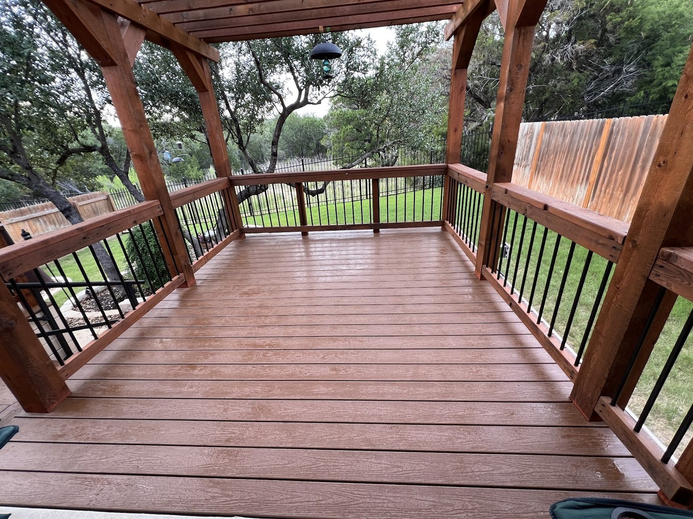

Home improvement · Lakeway, TX
Decks, stairs and railings, built to last
Hard work, fair prices and finished jobs that match the plan.
Home improvement · Lakeway, TX
Hard work, fair prices and finished jobs that match the plan.

Bring a photo and we match it. Small jobs get the same care as big ones.
Google rating5.0
Google reviews85
7:30am, 7:30pmMon–Sat
Hooks
Stairs, railings, decks, walkways, pergolas and awnings on the north shores of Lake Travis.
Banisters and railings rebuilt from your photo, and stairs repaired.

Decks and walkways refurbished in about a week, with a wrap-around deck among the finished work.

Pergolas, porch swings and window awnings installed, even in damp weather.

Done


Notes
5.0 · 85 Google reviews
Rene and Carla are two of the hardest working people I've ever seen. They completely refurbished our decks and walkways this past week. The quality of the work was simply exceptional. It is obvious they take great pride in their work. IIt was a pleasure getting to know them.
The kindness, fair prices and outstanding quality of work is what sets Dutch Skillz aside. When something feels that right, you know it’s good people! The latest was construction of our pergola porch swing that I was soooo excited about, back 5 months ago when I got it! I called and Rene was here in 3 days and the project completed in 3 hours…to perfection. Every time.
We hired Rene for a relatively small job fixing the stairs off our back patio. In short, we are extremely satisfied with the work that Rene did…his craftsmanship, communication, flexibility and creativity all exceeded expectations. Rene was quite easy to get along with and we could tell that he was committed to the success of the project.
Contacted Rene to redo my stair banister and railing. I showed him my photo inspiration and he nailed it! Looks just like what I wanted. He does a great job! I am very happy with the final outcome. Highly recommend. I have attached a before and after.

The guy behind the van
A home improvement and general contracting outfit serving the north shores of Lake Travis. Reliable work, clear communication, flexible and creative.
Rene and Carla work hard and take pride in every job, rain or shine.
Call or stop by
Lakeway, TX Directions
We come to you around Lakeway and Lake Travis. Call or text to set up a visit.